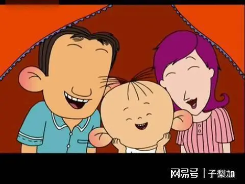

| 动漫介绍 | 人物简介 | 剧情简介 | 图片欣赏 | 动漫欣赏 | 在线留言 |
|
|||||||
|
|||||||
 |
《大耳朵图图》是由速达执导，叮当编剧，豆豆、范楚绒、赵铭配音，上海美术电影制片厂制作的电视动画片系列。 《大耳朵图图》系列共5季电视动画以及2部动画电影，主要讲述了胡图图和小伙伴的成长故事。 胡图图是一个机灵，淘气聪明的三岁小孩，他天生快乐，心地善良，喜欢多管闲事，精力充沛，对周围的事物非常好奇，他爱胡思乱想，最大的特点就是好吃，他的可爱和自作聪明让人忍俊不禁。 《大耳朵图图第一部》于2004年6月1日在中央电视台少儿频道首播， 系列共计130集， 每集11分钟左右。 《大耳朵图图》在第1季播出后收视率创下中国动画片新高，牢牢占据收视亚军的地位。2005年，被广电总局评为年度十部优秀国产动画片，推荐全国电视台优先播出。 2013年，“大耳朵图图”当选国家动漫品牌建设和保护计划。 2016年，《大耳朵图图—彩色世界》获国产动画发展专项资金项目2015年度优秀国产电视动画片一等奖
|
大耳朵图图 |